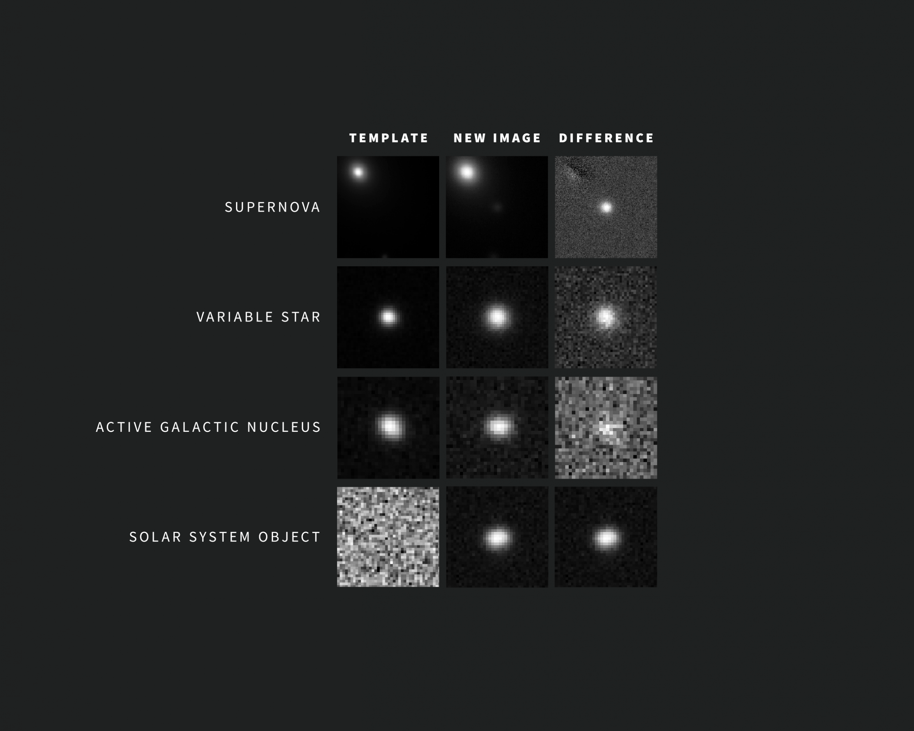
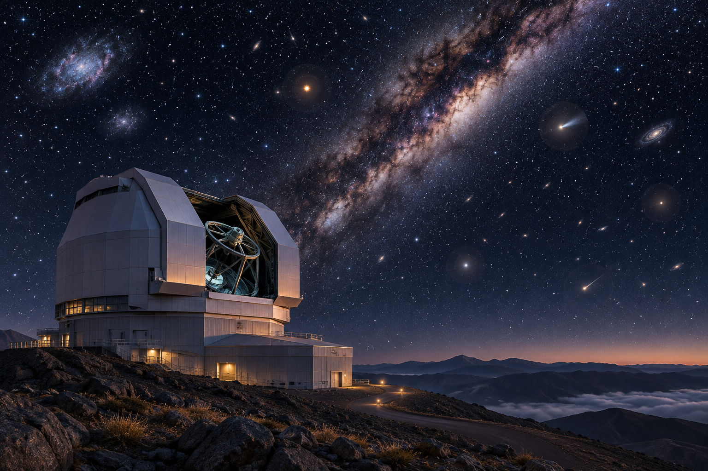
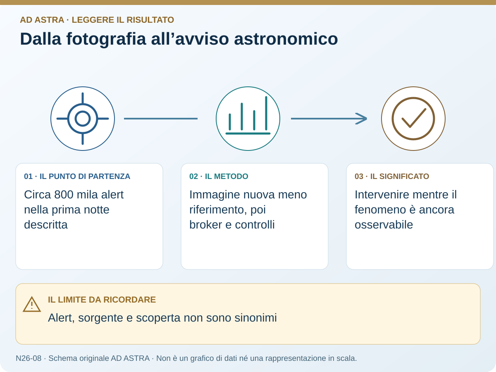

Osservatori e dati
Rubin accende gli avvisi del cielo che cambia
Le prime notifiche scientifiche mostrano come un cambiamento di luce può diventare una richiesta di osservazione per altri telescopi.
Una fotografia del cielo mostra ciò che c’è. Due fotografie, confrontate bene, possono mostrare ciò che è cambiato. La diffusione dei primi alert scientifici del Vera C. Rubin Observatory, descritta da INAF il 25 febbraio, trasforma questa idea in un sistema su vasta scala: nella notte precedente sono state prodotte circa ottocentomila notifiche. Non sono altrettante scoperte confermate, ma segnali da classificare e seguire.
LA NOTIZIA IN BREVE
- Gli alert segnalano variazioni di luminosità o posizione.
- Le notifiche sono distribuite entro circa due minuti.
- I broker filtrano i segnali e aiutano a scegliere le osservazioni successive.
La notizia in tre immagini



Un cielo osservato come una sequenza
Supernove, stelle variabili, nuclei galattici attivi e asteroidi possono tutti generare cambiamenti, ma per ragioni molto diverse. Una sorgente che appare più luminosa potrebbe essere una stella che varia, un’esplosione distante oppure un oggetto che si è spostato. La prima misura indica che qualcosa merita attenzione; non assegna automaticamente una spiegazione fisica.
Il punto nuovo è la combinazione di area osservata, ripetizione delle riprese e rapidità. Rubin si inserisce nell’astronomia del dominio temporale, che considera il tempo una coordinata essenziale. Per un fenomeno destinato ad affievolirsi rapidamente, sapere subito dove guardare può determinare quali informazioni sarà ancora possibile ottenere.
Sottrarre le immagini senza sottrarre la scienza
Il software confronta una nuova esposizione con un’immagine di riferimento. Prima della sottrazione le immagini devono essere allineate e rese confrontabili: una differenza di nitidezza o di risposta del sensore può altrimenti sembrare una variazione astronomica. Il risultato è una mappa delle differenze, nella quale le sorgenti stabili tendono a cancellarsi.
Un pacchetto di alert raccoglie misure e informazioni di contesto. A valle operano i broker, piattaforme che incrociano cataloghi, cronologie e criteri di selezione. Un gruppo interessato alle supernove può chiedere segnali diversi da chi cerca corpi minori. Non esiste quindi una lista unica che abbia lo stesso interesse scientifico per ogni utilizzatore.
Un esempio chiarisce la differenza fra rilevazione e classificazione. Se in una nuova immagine resta un punto luminoso dopo la sottrazione, sappiamo che il campo è cambiato. Per stabilire se si tratti di una supernova occorrono storia della sorgente, colore, eventuale galassia ospite e osservazioni aggiuntive. L’algoritmo può ordinare le probabilità, ma non rende superflue le verifiche fisiche.
L’avviso deve arrivare prima che il segnale scompaia
La distribuzione rapida consente ad altri strumenti di intervenire. Una curva di luce racconta quanto una sorgente varia; uno spettro può aiutare a stabilire che tipo di oggetto sia e a quale distanza si trovi. Un telescopio ad ampio campo trova il cambiamento, mentre osservazioni mirate ne approfondiscono la natura: è una collaborazione fra strumenti con capacità differenti.
Su tempi più lunghi, la ripetizione costruisce una memoria osservativa. Un comportamento apparentemente eccezionale può rivelarsi periodico quando aumentano le misure; un fenomeno inizialmente ambiguo può distinguersi da altri grazie all’evoluzione del colore e della luminosità. La qualità non sta soltanto nel singolo fotogramma, ma nella continuità con cui i dati vengono collegati.
La tempestività deve perciò accompagnarsi alla tracciabilità. Conservare misure, immagini di contesto e criteri usati dal filtro permette a chi riceve un avviso di valutarlo. Un sistema automatico funziona scientificamente quando rende controllabile la propria selezione, non quando nasconde le incertezze dietro una sola etichetta molto sicura.
Ottocentomila notifiche non sono ottocentomila oggetti nuovi
La stessa sorgente può produrre più alert. Inoltre classificazioni probabilistiche, artefatti strumentali e fenomeni già conosciuti convivono nel flusso. Usare il numero delle notifiche come conteggio delle scoperte gonfierebbe il risultato. Il valore scientifico dipende dalla selezione, dalle conferme e dalla capacità di non perdere eventi rari fra quelli comuni.
Anche la copertura temporale ha limiti: meteo, visibilità, sensibilità e frequenza delle osservazioni influenzano ciò che viene trovato. Un evento non segnalato non è necessariamente assente. La notizia di febbraio riguarda l’avvio di una capacità operativa; la documentazione aggiornata dei broker descrive il funzionamento del servizio, senza trasformare gli sviluppi successivi in fatti già acquisiti nella prima notte.
PER CAPIRE MEGLIO
Le parole della notizia
FotometriaApri la spiegazione
Misura quantitativa della luce ricevuta da una sorgente, utile anche per seguirne le variazioni nel tempo.
Leggi la voce del GlossarioStella variabileApri la spiegazione
Stella la cui luminosità osservata cambia per processi fisici oppure per effetti geometrici, come le eclissi.
Leggi la voce del GlossarioRISALI ALL’ORIGINE
Fonti e approfondimenti
Il comunicato presenta il risultato al pubblico. Il lavoro scientifico e la sua cronologia sono indicati separatamente.
COMUNICATO UFFICIALEINAF: primi alertComunicato del 25 febbraio; prima notte indicata: 24 febbraio 2026.DOCUMENTO SCIENTIFICO E PROVENIENZARubin: Alerts and brokersDocumentazione ufficiale consultata; aggiornamento 25 ottobre 2026, usata per il metodo, non per retrodatare servizi.CONTINUA SU AD ASTRAApprofondisci nella Biblioteca FederataUna ricerca tematica fra i materiali disponibili.